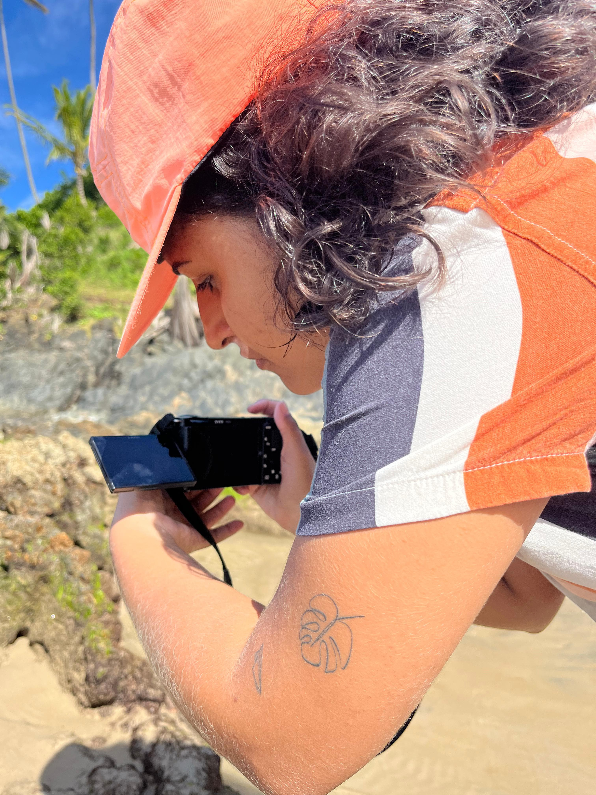

Sobre Mim

Filmmaker da área Cinematográfica e bacharelanda em Cinema e Audiovisual pelo Instituto Federal de Goiás.
Filmmaker da área Cinematográfica e bacharelanda em Cinema e Audiovisual pelo Instituto Federal de Goiás.



Cecília é uma jovem escritora que luta contra o vazio emocional causado pela pandemia da Covid-19 e pela perda da namorada. Emily Dickinson, a famosa poeta do século XIX, surge para se tornar uma figura mentora em sua imaginação, inspirando-a a redescobrir sua poesia. Cecília embarca em uma jornada onírica de palavras e memórias.

Aisha é uma jovem mulher tentando se reencontrar em meio a perdas. Enfrentando a ansiedade, a decepção e o luto, ela usa da escrita como seu ponto de fuga. É possível encerrar esse ciclo?

Baseado na aceitação física e mental que a maioria das mulheres e jovens já passaram ou infelizmente ainda têm de passar, esse documentário visa mostrar através de relatos, poesia e imagens, o processo desafiador que é vencer mais essa luta, de aprender a arte do amor próprio e da autovalorização, de ver detalhes que muitas vezes passam despercebidos aos olhares de fora, permitindo reconhecer seu próprio reflexo.
Em um curta-metragem tocante, três mães se reúnem para compartilhar suas histórias de vida e as lutas que enfrentaram ao longo do caminho. Através de relatos pessoais e íntimos, elas revelam a força, a resiliência e o amor incondicional que moldaram suas jornadas, oferecendo uma visão profunda e inspiradora sobre a maternidade.